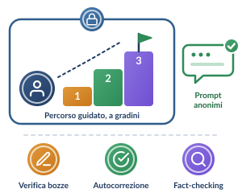

B · Scuola secondaria di primo grado · 11–14 anni (minori di 14 anni)Il compito a casa con l’IA si adatta all’età, alla maturità cognitiva e al profilo giuridico degli studenti.

Un gradino alla volta: compiti strutturati, in ambiente protetto
L. 132/2025, art. 4, c. 4 · D.Lgs. 196/2003, art. 2-quinquies
Consenso dei genitori
Consenso genitoriale obbligatorio per l’uso dell’IA.
Configurazione didattica
Compiti molto strutturati
Compiti a casa fortemente strutturati, con percorsi di supporto (scaffolding).
Modalità operativa
Ambienti protetti, prompt pronti
Ambienti protetti scolastici con prompt preconfezionati e de-identificati. L’alunno usa l’IA per:
- verificare le proprie bozze;
- l’autocorrezione grammaticale;
- il fact-checking di brevi risposte.
Obiettivo
Allenare privacy e senso critico
Addestrare gli studenti a:
- de-identificare i dati nei prompt;
- proteggere la privacy online;
- riconoscere le prime «allucinazioni» algoritmiche.